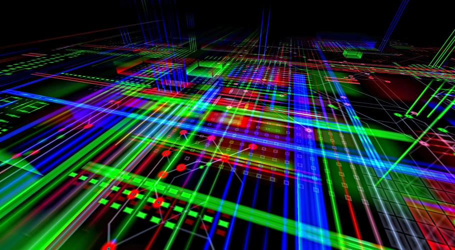

În tehnica Divide et Impera, în urma împărțirilor succesive în subprobleme, se ajunge în situația că problema curentă nu mai poate fi împărțită în subprobleme. O asemenea problemă se numește problemă elementară și se rezolvă în alt mod – de regulă foarte simplu. Divide et Impera admite de regulă o implementare recursivă – rezolvarea problemei constă în rezolvarea unor subprobleme de același tip. Un algoritm pseudocod care descrie metoda este:
Algoritm DivImp(P)
Dacă P este problemă elementară
R <- RezolvăDirect(P)
Altfel
[P1,P2] <- Descompune(P)
R1 <- DivImp(P1)
R2 <- DivImp(P2)
R <- Combină(R1,R2)
SfârșitDacă
SfârșitAlgoritm